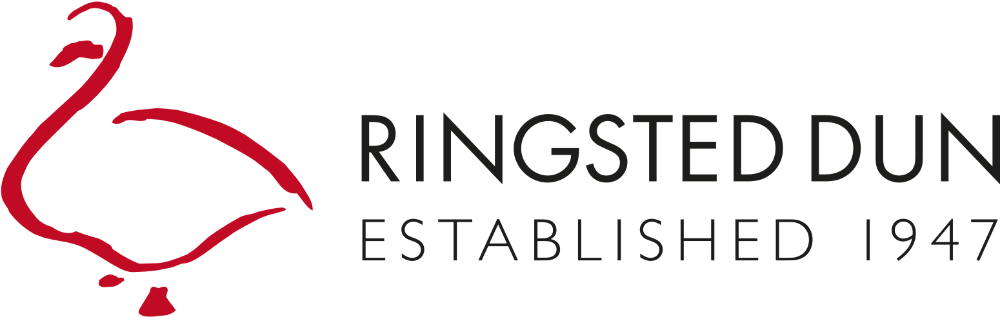
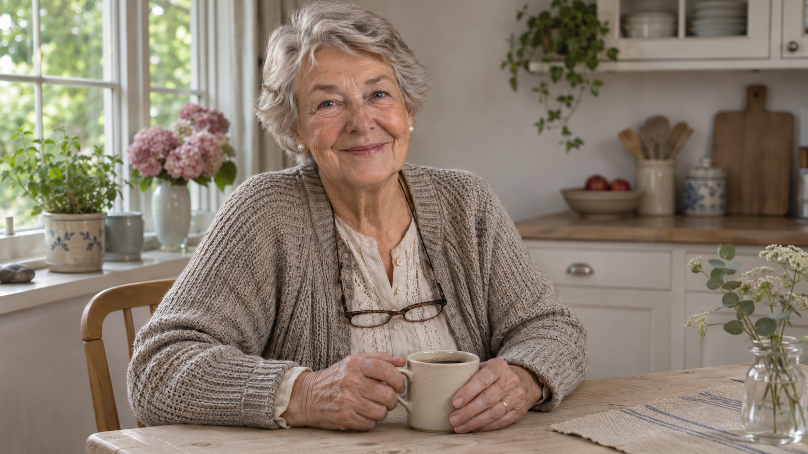

Hvorfor Ringsted Dun
Brandet kalder sig allerede »Eksperter i god søvn« og har en historie, der går tilbage til 1947. Det giver et troværdigt fundament for en kampagne om god søvn.

StrategiDel 1 af 6
OversigtDel 1 af 6 · Søvnguiden – dengang og i dag
Hvem taler vi til, hvorfor skal de lytte til Ringsted Dun, hvor møder vi dem – og hvordan ved vi, om det virker?
Vi har valgt case 2: en B2C-kampagne med søvntips. Afsenderen er Ringsted Dun – ikke Dykon.
Brandet kalder sig allerede »Eksperter i god søvn« og har en historie, der går tilbage til 1947. Det giver et troværdigt fundament for en kampagne om god søvn.
Ringsted-dun.dk har søvnguides og en dynevælger, men indholdet bliver ikke ført videre ud på sociale medier. Det gør kampagnen.
Engmo Dun henvender sig mest til det svenske marked. Case 1 (B2B på LinkedIn) blev også fravalgt. Dykons Sleep Lab er nedprioriteret, fordi det er Dykons egen fortælling.
Primær · Conzoom D3
Velhavende par på 66+ med voksne børn. De bor i villa og interesserer sig for kultur, design, have, sundhed og rejser. De bruger nettet sjældnere end gennemsnittet, og sociale medier fylder ikke meget i hverdagen.
Sekundær · Conzoom A3
Her er det de voksne børn på 40–50 år, der er interessante. De deler indhold med deres forældre – og kan købe dynen som gave.

Primær proto-persona
Sekundær persona · Grethes datter
Ægtepar er den største husstandstype blandt 60–80-årige, men andelen af enlige stiger med alderen (Danmarks Statistik 2026). Vi taler derfor om søvn som et individuelt behov. Et fokus på partneren kan udelukke – og minde enker og enkemænd om et tab. Det bekræftede brugertesten af søvnguiden. Af samme grund undgår vi ord som »ældre« og »seniorer«.
Personaerne bygger på Conzoom-data og vores egne antagelser, ikke på interviews.
Vi hos Ringsted Dun hjælper dig med at give dine nætter samme guldkant som dine dage, gennem søvnråd og dansk dunhåndværk, vi har forfinet siden 1947.
USP'en kobler målgruppens eget navn (»Guldkant på tilværelsen«) med brandets historie og håndværk.
Klart størst på sociale medier. Bruger kendte, influencere og meget annoncering.
Den tætteste konkurrent på vores positioneringskort. Fokuserer mest på produktet.
Med i sammenligningen af tilstedeværelse og fortælling på sociale medier – begge mindre synlige end Bedre Nætter.
Konkurrenterne vinder på fortælling, ansigter og følelse. Dykons brands har stærke beviser, men de formidles tørt og mest på hjemmesiden. Ringsted Duns historie siden 1947 er et fortællemæssigt aktiv, som ingen konkurrent kan kopiere – og Ringsted Dun vil være eksperter i søvn, ikke kun i produkter. Hele analysen ligger på vores FigJam-board.
Sociale medier fylder ikke meget for D3-segmentet. Derfor bruger vi Facebook til at finde målgruppen, quizzen til at gøre det personligt, og nyhedsbrevet til at bygge tillid over tid.
| Kanal | Rolle | Hvorfor |
|---|---|---|
| Primær kanal: betalt rækkevidde, lead ads og retargeting | Annoncerne kan målrettes præcist mod Grethe og Mette | |
| Sekundær kanal til delbare opslag | Her er Mette – og hun deler videre til sin mor | |
| YouTube | Hjemmet for den lange video | Ringsted Dun har allerede en kanal. Ikke en kanal til rækkevidde |
| Quizzen | »Myte eller sandhed?« – engagement | Gør søvn personligt og leder hen til søvnguiden |
| Nyhedsbrev | Ejet kanal (Klaviyo, som Ringsted Dun allerede har på hjemmesiden) med søvnguiden som velkomstgave | Ringsted Dun ejer selv kontakten – uafhængigt af algoritmer |
| Fravalgt | TikTok og LinkedIn | Målgruppen er der ikke, og kampagnen er B2C |
Den røde tråd går fra et opslag i feedet til et køb i butikken eller online.
Grethe-film, reel, karrusel og nostalgiopslag i feedet.
Facebook · Instagram
Quizzen »Myte eller sandhed?« – nostalgi frem for produkt.
Quiz
Resultatet vises uden krav om e-mail. Tilmeldingen er frivillig.
Quizresultat · lead ads
Søvnguiden som velkomstgave, derefter ét kapitel pr. mail.
Nyhedsbrev
Dynen til sig selv – eller som gave fra Mette til Mors Dag.
Butik · ringsted-dun.dk
50
Kampagnens KPI
nye tilmeldinger til Ringsted Duns nyhedsbrev via kampagnen inden for fire uger fra lanceringen.
Baseline er listens størrelse ved lanceringen – den skal Ringsted Dun oplyse.
Ringsted Dun har en tilmelding i bunden af hjemmesiden, men den bliver kun vist for dem, der siger ja til marketing-cookies (tjekket 24/11). Kampagnen giver en grund til at tilmelde sig: søvnguiden. Quizzens tilmelding vises for alle. Listen ejer brandet selv, og den har værdi længe efter kampagnen.
50 tilmeldinger svarer fx til 2.500 besøgende på landingssiden med en konvertering på 2 %. Vi kender ikke tal fra Ringsted Duns nuværende tilmelding, så der er ikke et sammenligningsgrundlag.
Hver uge i Klaviyo og Google Analytics, så kampagnen kan justeres undervejs. Resultatet bliver baseline for de næste mål.